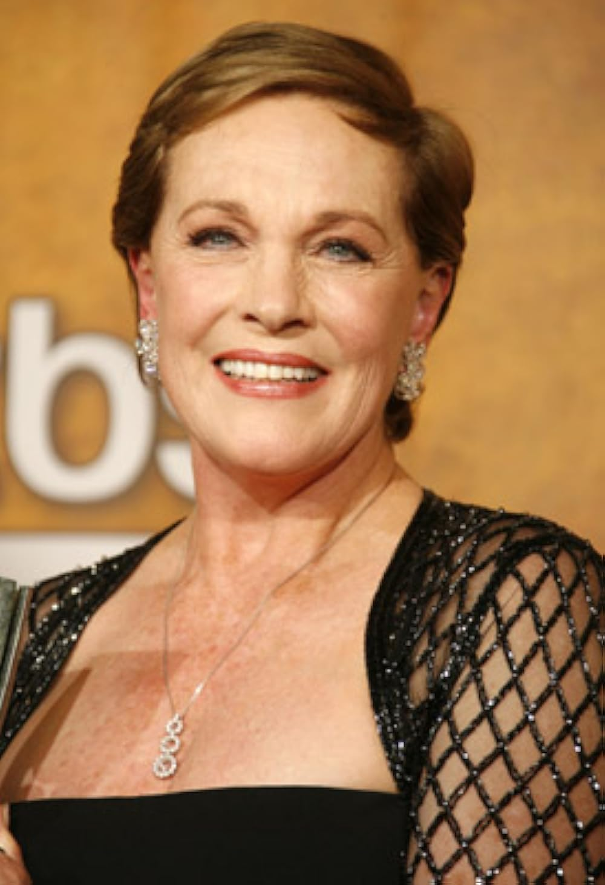
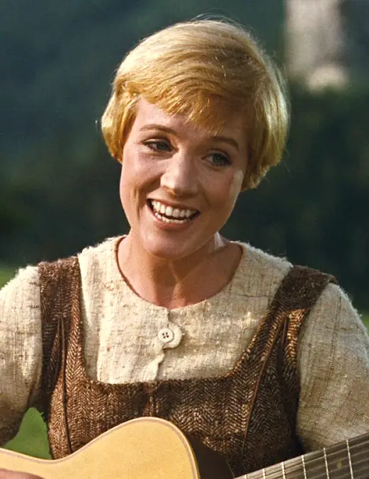
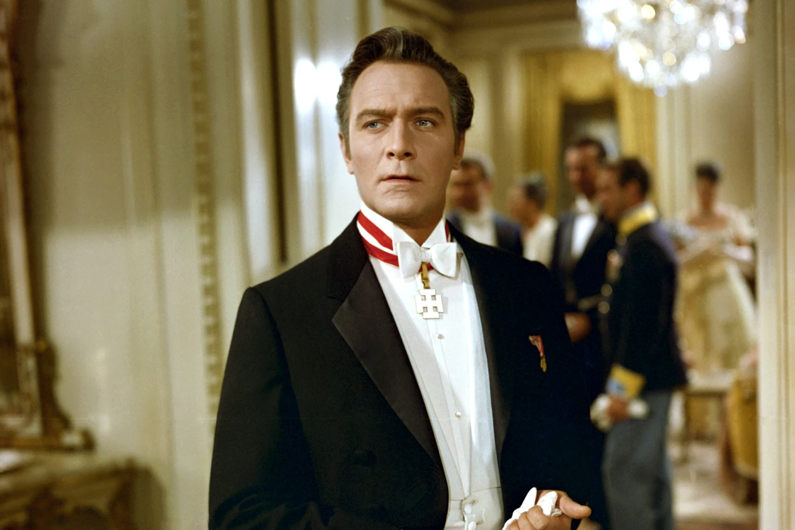

The Cast: Where are they now?
 Julie Andrews (Maria von Trapp)
(1935-Present)
In 1965, Julie Andrews was a rising star when she played Maria in "The Sound of Music." Having just achieved significant success with her role in "Mary Poppins," for which she won an Academy Award, Andrews brought a mix of warmth, charm, and a powerful singing voice to the role of Maria. Her portrayal of the spirited governess who brings joy and music to the von Trapp family captured audiences' hearts and solidified her status as a leading actress in Hollywood. Andrews' performance, characterized by her clear, melodic voice and engaging screen presence, was a key factor in the film's enduring popularity and critical acclaim.
As of today, Julie Andrews is celebrated as a legendary figure in the entertainment industry, known for her extensive career in film, stage, and television. After "The Sound of Music," she continued to take on diverse roles in movies like "Victor/Victoria" and the "Princess Diaries" series. Although her singing career was impacted by a vocal surgery in 1997, which limited her ability to sing, Andrews has remained active in the industry. She has authored children's books, provided voice work in films like "Despicable Me" and "Shrek," and hosted the Netflix series "Julie's Greenroom." Andrews' legacy as Maria von Trapp endures, and she is widely respected for her contributions to entertainment and her graceful resilience in the face of personal and professional challenges.
Christopher Plummer (Baron von Trapp)
(1929-2021)
In 1965, Christopher Plummer starred as Captain Georg von Trapp in "The Sound of Music," bringing depth and gravitas to the role of the strict but loving father. Although Plummer initially viewed the film with some disdain, his performance was pivotal in balancing the film's emotional and musical elements. Over the decades, Plummer evolved into a highly respected and versatile actor, known for a wide range of roles in film, television, and theater. He earned critical acclaim and numerous awards, including an Academy Award for "Beginners" in 2012, becoming the oldest actor to win an Oscar at that time. Until his passing in 2021, Plummer continued to work prolifically, leaving behind a legacy as one of the finest actors of his generation.
